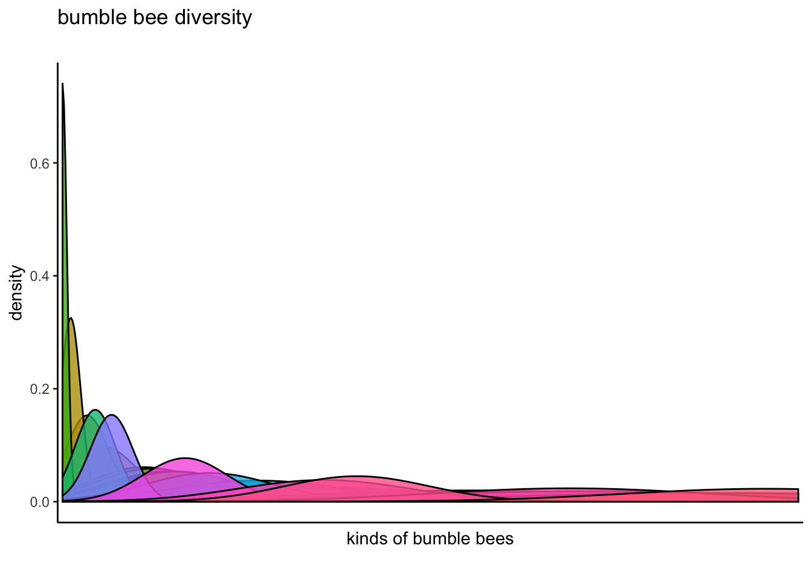

Research Areas
 My field of research, known as Biodiversity Informatics, aims to advance knowledge in biology and biodiversity by facilitating the digital capture, computational interpretation, and electronic dissemination of biological information. I draw on rich sources of specimen-based information in natural history collections to further our understanding of biodiversity and conservation through research combining biological inquiry, large-scale biological collection digitization, and data science. I am also primarily interested in using these methods to study insects, particlulary those in the order Hymenoptera (bees, wasps, and ants). Insects are numerous, biodiverse, critical to our ecosystems and declining.
My field of research, known as Biodiversity Informatics, aims to advance knowledge in biology and biodiversity by facilitating the digital capture, computational interpretation, and electronic dissemination of biological information. I draw on rich sources of specimen-based information in natural history collections to further our understanding of biodiversity and conservation through research combining biological inquiry, large-scale biological collection digitization, and data science. I am also primarily interested in using these methods to study insects, particlulary those in the order Hymenoptera (bees, wasps, and ants). Insects are numerous, biodiverse, critical to our ecosystems and declining.
Biocollections
Central to my research are natural history collections - massive sets of biological specimens that are housed in museums, tissue collections, herbaria, botanical gardens, and zoos, and that have been compiled over several centuries. Together, they constitute our biodiversity libraries. These collections have broad cultural significance, and more importantly, constitute enormous primary resources that support fundamental research in the biological sciences.  These libraries of millions of biological specimens, ranging from preserved pollinating bees to dinosaur remnants, shed light on the past, and illuminate ways that the climate has changed, that species are lost, and how biological knowledge has evolved. They also constitute voucher repositories for specimens used in research and identification of organisms of all varieties.
These libraries of millions of biological specimens, ranging from preserved pollinating bees to dinosaur remnants, shed light on the past, and illuminate ways that the climate has changed, that species are lost, and how biological knowledge has evolved. They also constitute voucher repositories for specimens used in research and identification of organisms of all varieties.
As informational resources, these collections hold tremendous value, but remain underused. There are presently large-scale initiatives to digitize the biological material contained within them, as evidenced by funding initiatives such as the National Science Foundation’s Advancing Digitization of Biological Collections (ADBC) program, the primary funding support for my current work. A major focus of my research is to combine disparate digitization efforts in order to facilitate information processing and biological inquiry. To this end, I examine processes through which we capture information in digital formats, how we publish and share biological information, preserve at risk information, and use this information in scientific activities. At its heart, this process involves the digitization of physical specimens and textual collection event data, how we manage these digital records, how we assess the quality of these data, and how we may augment them with salient metadata. My work is consequently aligned with a major thrust of research in biodiversity informatics that has sought to enable access to biodiversity data troves via computing systems, data science methods, and new technologies.
Entomology and Hyemenopterology
Bees, wasps and ants are one of the most numerous and speciose creatures on the planet. They come in an array of sizes and habits, and humans depend on them for pollination and biocontrol of pests. Many groups of wasps are rare and difficult to study, often eluding scientific study. Presently, the focal areas of my research center on rapidly diversifying cryptic species and diversity of species in coastal California.
